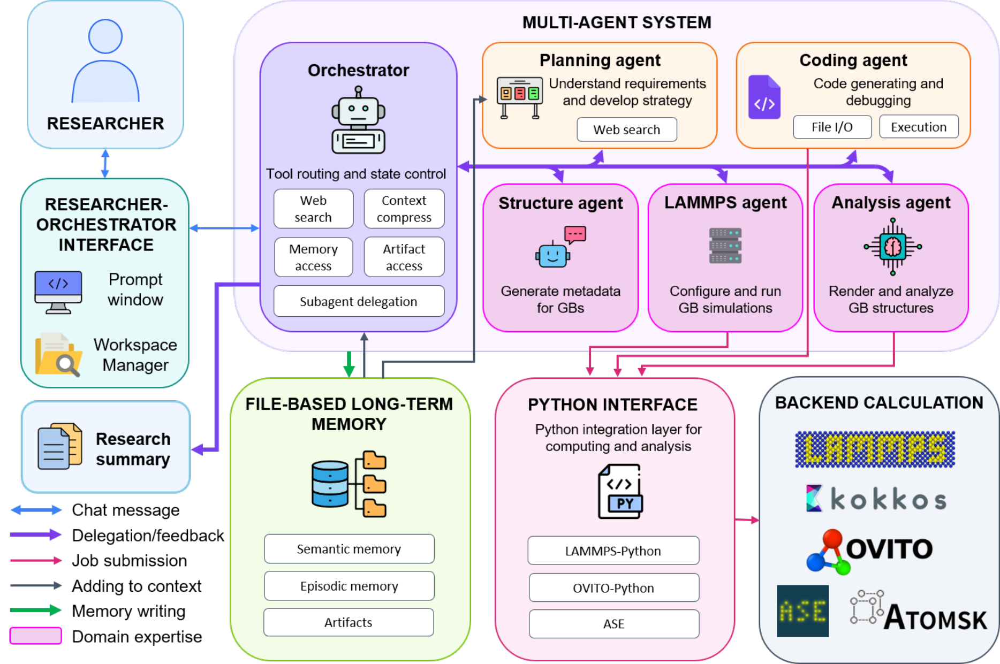
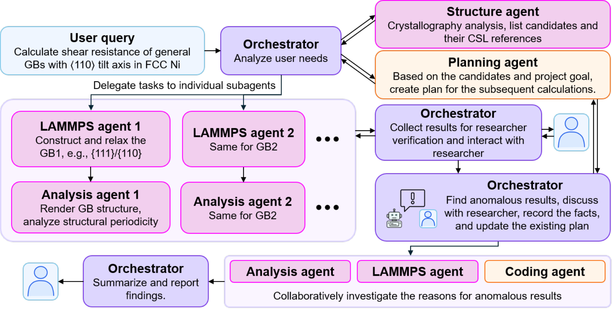
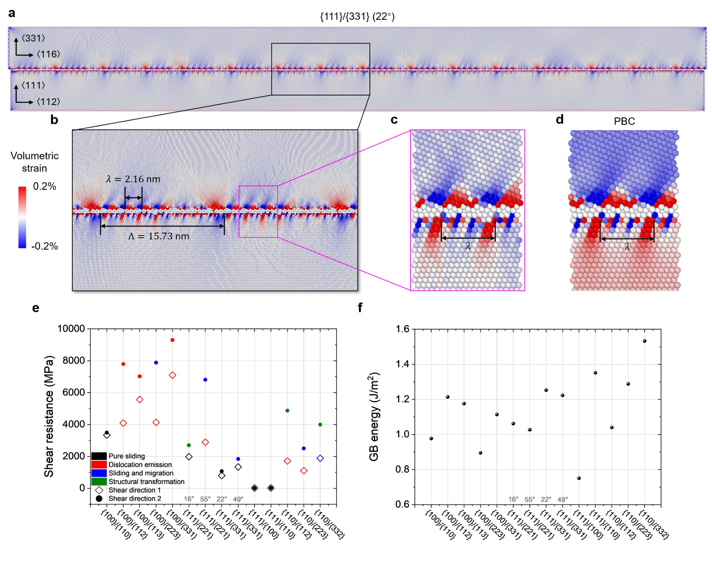
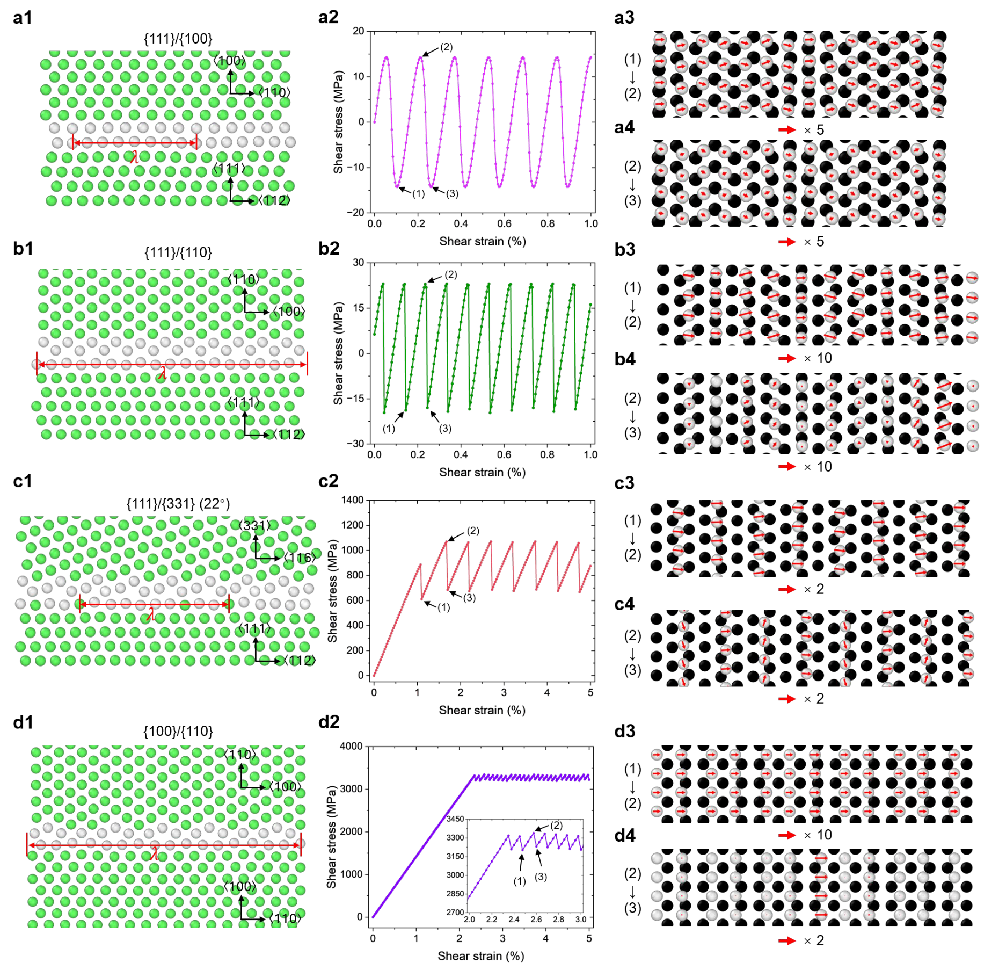
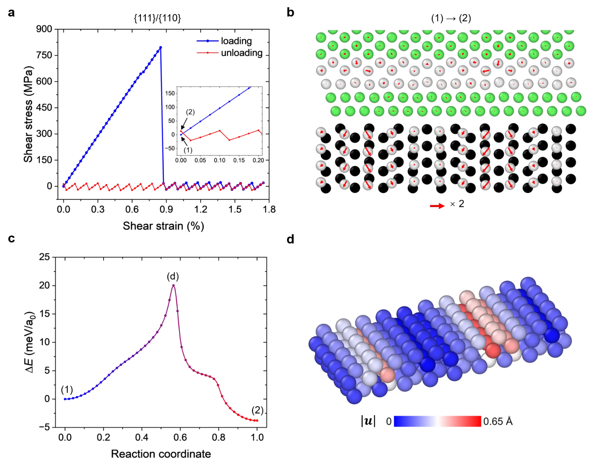
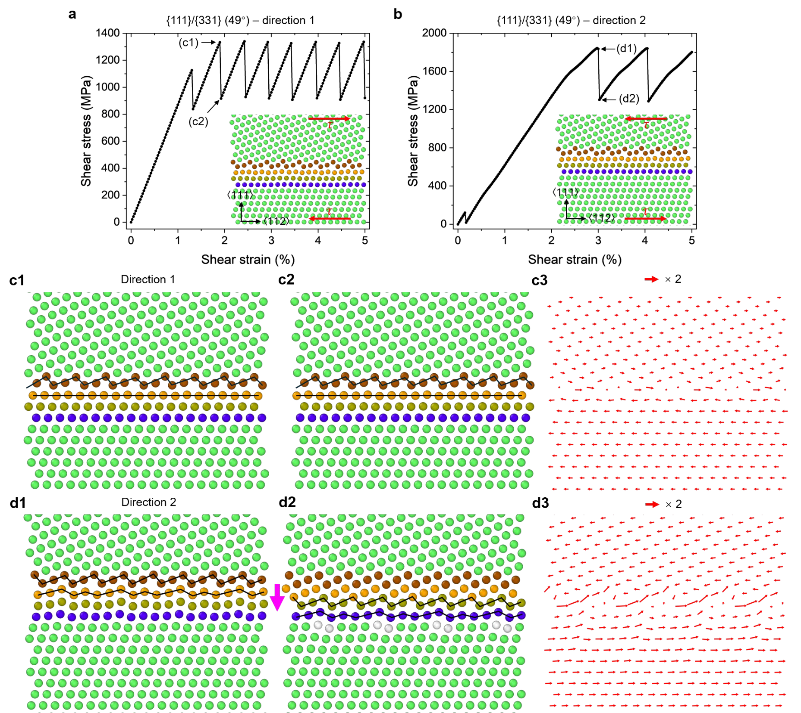

GBClaw：让晶界批量计算接上机制追问，从剪切异常找到原子重构
论文原文 ↗原文：Yazhuo Liu、Kunqing Ding、Xiaoguo Gong 等，GBClaw: An agentic AI framework for atomistic grain boundary research and mechanistic discovery，arXiv:2610.28629，2026。官方页面 · 论文 PDF
多晶材料由不同取向的晶粒组成，晶粒之间的界面称为晶界。外力作用下，晶粒可以沿界面相互滑动，晶界也可能一边滑动一边移动位置。这些过程影响材料的塑性、蠕变和失效，但要解释它们，不能只算一批界面能，还要追踪原子究竟怎样重新排列。
GBClaw 将大语言模型组织成一个有专业分工、可持续保存研究状态的智能体系统：一方面批量构建晶界并运行原子模拟，另一方面接受研究者的追问，重新规划补充计算。作者以镍中的 14 种一般非对称倾转晶界为对象，研究缺陷层级怎样改变剪切阻力，并把一次异常高阻力追溯到初始界面的亚稳结构。
这项工作的主线是把系统筛选→发现差异或异常→设计能区分原因的计算→得到原子机制接成一条连续研究流程。
一、为什么选一般晶界：两侧晶格常常无法用一个小周期对齐
“倾转晶界”是两个晶粒围绕共同轴发生相对转动形成的界面。这里共同轴为 ⟨110⟩，{111}/{331} 等记号表示两侧晶粒分别以哪类晶面终止于界面；括号中的角度进一步指定两侧的相对取向。
在一些特殊取向，两侧晶格叠加后会出现周期重复的重合位置，称为重合位置点阵（CSL），Σ 用来标识这类几何关系。一般晶界更常见，两侧沿滑动方向的重复距离可能成无理数比，不能用有限长度严格同步；作者把这种关系称为非公度。两侧原子要接成界面，必须通过弹性应变和局部失配缺陷来协调。
因此，晶界既有短尺度的原子排列，也可能存在更长尺度的缺陷重复。若只截取一个很小的周期单元，得到的可动缺陷和滑动方式会与较大界面不同。GBClaw 正是围绕这种多尺度结构，组织建模、力学测试与后续机制分析。
二、方法怎样做：从研究要求生成结构与计算，再根据结果调整问题
1. 总协调者把专业任务交给不同智能体

图1｜GBClaw 的研究架构（原文 Figure 1）。研究者与总协调者交互，规划、结构、LAMMPS、分析和编程五类智能体完成各自任务；Python 接口连接模拟软件，长期记忆保存研究状态和计算文件。
总协调者接收研究目标、分派任务并整合结果。规划智能体将目标拆成问题、参数和计算计划；结构智能体处理晶体取向、两侧终止晶面和可用重复长度；LAMMPS 智能体负责双晶构建、结构松弛、界面能、剪切与过渡路径计算；分析智能体把应力变化与原子位移、结构变化对应；编程智能体为预设工具尚未覆盖的处理任务生成和运行脚本。
这些角色通过 Python 接口调用 LAMMPS、OVITO 和 ASE。LAMMPS 执行原子模拟，OVITO 用于结构与轨迹分析和显示，ASE 提供原子结构处理接口。系统以 LangChain、LangGraph 等框架组织任务，并按任务复杂度使用现有语言模型。语言模型承担的是规划、工具调用、信息整合与分析协作，原子相互作用和结构演化由实际模拟程序计算。
跨越多个阶段时，系统把信息分层保存：领域工作规则、项目目标与主要发现、近期交互与待办、持久研究记录，以及原始构型、轨迹、日志和代码。后续任务可通过运行标识找到之前的具体文件，继续分析相同样本。这样，新的问题能直接接到已有计算上。
2. 真实输入是“计算面心立方镍中 ⟨110⟩ 一般晶界的剪切阻力”

图2｜从研究问题到机制分析（原文 Figure 2）。结构筛选和计划形成后，各晶界可并行构建与分析；研究者检查中间结果，异常响应再触发补充计算和计划调整。
结构智能体先围绕 Σ<50 的参考 CSL 关系寻找一般非对称晶界，要求至少一侧属于 {100}、{110} 或 {111} 低指数晶面，取向与对应参考关系相差不超过 5°，两侧晶面各米勒指数的绝对值均小于 4。筛选得到 12 对不同终止晶面；研究者进一步加入同类晶面组合的两种不同取向，最终研究 14 个晶界构型。
下一步，LAMMPS 智能体把每对晶面和晶粒取向变成上下相接的镍双晶，采用 Howells–Mishin 角度依赖原子势，移除跨界面距离过近的重叠原子，再交替松弛原子位置和晶胞长度。输出是松弛构型及其应力、能量和结构文件，分析智能体据此识别界面的重复排列与缺陷。
以 {111}/{331}(22°) 为例，较长界面松弛后出现两层缺陷。**初级晶界失配位错（PGMD）**间距密，主要协调局部晶格错配，它们的重复排列形成短周期 λ；**次级晶界失配位错（SGMD）**更稀疏，用来协调剩余错配，相邻次级缺陷之间形成长尺度 Λ。位错在这里可理解为原子排列中的线状错接；它移动时，能够在界面上传递一小段相对滑移。

图3｜模型结构怎样连接到力学比较（原文 Figure 3）。a—c 显示短周期初级缺陷与稀疏次级缺陷；d 是保留局部排列的紧凑周期模型；e 比较两个剪切方向的强度及变形模式，f 比较松弛界面能。
图3中短周期为 2.16 nm，次级缺陷间距约 15.73 nm。为了把两种滑动过程分开研究，作者从次级缺陷之间截取局部结构，构建不含 SGMD 的紧凑周期模型；剩余错配由弹性应变协调。之后再建立包含多个 SGMD 的更长周期模型，比较相同晶界通过不同缺陷结构传递滑动时的阻力。
3. 应力曲线先定位事件，原子轨迹再解释事件
剪切测试采用逐步位移并在每一步能量最小化的方式：上方边界层沿界面移动，下方边界层在该方向固定。每种构型分别沿相反方向加载，记录剪切应力、原子位置和局部结构。文中剪切强度取初始瞬态之后、后续稳定响应中的应力峰值。
分析智能体寻找曲线中的应力下降事件，再读取下降前后同一批原子的位移。应力下降对应储存的弹性应力得到释放；原子位移告诉研究者，释放是通过界面纯滑动、界面迁移、向晶粒内发射位错，还是结构转变完成。由此，排序中的每个数值都有相应的原子运动过程。
三、主要发现：滑动阻力取决于缺陷层级，也取决于界面走哪条路径
1. 两个方向、不同缺陷层级，给出的强度可以相差很大
对不含 SGMD 的紧凑模型，14 种晶界的剪切强度跨越从十几 MPa 到 9.3 GPa 的宽广范围。{111}/{100} 和 {111}/{110} 分别可低至 14 MPa、23 MPa，而 {100}/{110} 约为 3.5 GPa。相同初始结构换一个剪切方向，常常改变强度，有时连变形模式都改变。

图4｜同为纯滑动，原子如何移动也不同（原文 Figure 4）。四行依次对应四种晶界；左列为结构，中列为应力—应变，右列以箭头显示应力变化前后的原子位移。
图4的四种晶界在两方向都可纯滑动，但局部动作并不相同。{111}/{100} 的位移较均匀；{111}/{110} 的位移分布更不均一；{111}/{331}(22°) 的位移分散在多个原子柱中；{100}/{110} 的每次明显应力下降则集中于特定原子柱的重排。宏观上的平移，是这些局部非均匀动作拼接起来的结果。
随后，作者根据每次应力下降产生的净晶粒平移，寻找能恢复等价界面排列的最小位移。这给出 SGMD 的伯格斯矢量，即描述该缺陷传递多大、沿什么方向滑移的向量。对 {111}/{331}(22°)，一次下降对应 1/8⟨112⟩ 平移；四次累积后达到 1/2⟨112⟩，原子进入等价位置。研究者进一步要求分析投影原子柱和叠加两侧晶格的几何图样，使轨迹、晶体学及既有高分辨电镜图像中的缺陷识别相互连接。
真正加入 SGMD 后，滑动可通过这些较稀疏缺陷沿界面移动来传递。对 {111}/{331}(22°) 的对应剪切方向，强度从不含 SGMD 时的 1,074 MPa 降到 530 MPa；{111}/{100} 和 {111}/{110} 的阻力下降更明显。{100}/{110} 则从 3,498 MPa 变为 3,870 MPa，仍属于高阻力界面。
这组比较把摘要中的关键物理结论落实了：**初级缺陷组织局部结构，次级缺陷提供可移动的滑动载体，两者共同决定界面怎样承受和释放剪切。**仅仅保留一个局部原子基元，与允许更长尺度缺陷存在，可能得到很不同的力学响应。
2. 一次约 800 MPa 的异常初始峰值，来自亚稳界面重构
{111}/{110} 原本在稳定滑动阶段只有约 23 MPa 阻力，但第一次加载却出现接近 800 MPa 的高应力，随后突然跌落。研究者据此追问：第一次加载究竟改变了什么？协调者把原计划扩展为加载—卸载循环、构型比较和过渡路径搜索。

图5｜从异常曲线追到亚稳重构（原文 Figure 5）。a 的首次高峰在后续低应力滑动中消失；b 显示初始与卸载构型之间的原子位移；c 给出两态之间的最低能量路径；d 显示路径鞍点的局部原子运动。
首先，把双晶加载越过高峰，再卸载到外加剪切应变为零。虽然加载前和卸载后的应变条件相同，后者保留了残余剪切应力，原子排列也没有恢复初态。于是，两种构型成为下一步计算的真实输入。
系统用**弹性带方法（NEB）**连接这两个端点：在初态与终态之间放置一串中间构型，优化它们，寻找能量较低的连续转变路径，并定位路径上最高的能量点，即鞍点。文中使用 144 个副本，在同样零外加剪切应变下比较两种界面结构。
结果显示，路径跨越约 20 meV/a₀ 的能垒后，进入比初态能量更低的结构，其中 a₀=3.52 Å 为镍晶格常数。鞍点的主要位移集中在界面附近，显示 {110} 终止面相对 {111} 面发生局部重构。把重构后的零应变构型重新加载，高应力异常便不再出现。
因此，初始高峰被追溯到建模和松弛过程中形成的亚稳局部结构：第一次加载推动其越过重构能垒，随后进入更容易滑动的结构。这里，人提出能够区分机制的问题，智能体将问题转换为额外计算，再把构型、应力和能量路径接成同一个解释。
3. 相同短周期和滑移矢量，仍可沿一个方向滑动、沿另一方向迁移
{111}/{331} 的 22° 与 49° 两种取向具有相同的 2.16 nm 短周期和相同 SGMD 伯格斯矢量，但剪切路径不同。22° 构型在两个方向都保持纯滑动；49° 构型在较低阻力方向纯滑动，反向则发生剪切耦合迁移，即切向晶粒平移同时伴随晶界沿法向移动。

图6｜同一界面改变加载方向后如何换一种运动模式（原文 Figure 6）。a、c 为方向1的纯滑动；b、d 为方向2的耦合迁移。紫色箭头标出界面向下移动，位移箭头展示相关原子层的协同重排。
对 49° 构型的反向加载，应力下降时，一些原子柱转变为对侧晶粒的排列，两层原子协同调整，界面随之下移。进一步叠加两侧晶格显示，两种取向在表面下的堆垛和次近邻排列不同；作者据此提出，这些几何差别造成方向相关阻碍，影响纯滑动与迁移之间的路径选择。
这也解释了为什么单独比较静态晶界能不够：两个方向的初始界面能相同，但剪切后的原子重排与可达路径可以不同。直接把应力事件和局部结构演化对应起来，才能解释方向相关的力学行为。
四、对材料科研智能体的贡献：让批量流程继续进入有针对性的物理研究
GBClaw 的方法价值，是让一批结构计算具有继续被追问的能力。筛选阶段形成可比较的晶界集合；模拟阶段把结构变为曲线和轨迹；异常出现后，研究者的判断推动加载循环、缺陷识别或 NEB 等新任务，已有结果和文件又直接成为下一阶段输入。
科学结果则集中于一般非公度晶界的缺陷层级：难以沿界面运动的初级失配位错构成结构障碍，能够移动的次级失配位错传递滑动；亚稳构型和原子层堆垛进一步改变可用的变形路径。将这些结构层次放进模型，会影响如何判断界面是否容易滑动，也影响后续使用高精度原子势研究晶界组成与结构的建模选择。
作者提供了开源实现与研究交互示例。这项工作把“自动把计算做完”推进到“在研究者指导下，把结果变成下一步有辨别力的计算”，展示了高通量模拟与机制研究如何在同一体系中衔接。
原始摘要完整中文翻译
智能体人工智能（AI）系统在自动化材料发现与设计中的复杂工作流方面具有巨大潜力，但要将其扩展到高度依赖领域知识的机制研究，仍然具有挑战。在此，我们提出 GBClaw，一个用于研究一般晶界结构与变形的智能体 AI 框架。尽管一般晶界构成了现实多晶材料中绝大多数界面，但由于结构复杂性和界面失配使实验与建模研究更加困难，它们仍然研究不足。
GBClaw 将大语言模型（LLM）集成到一个模块化架构中，该架构包括总协调者、专业智能体、领域专用工具、模拟接口和分层记忆。通过动态重新规划与迭代式工作流细化，这一框架有效地将系统模拟与有针对性的机制分析联系起来。
将 GBClaw 应用于镍中的 14 种一般非对称倾转晶界后，我们表征了界面缺陷结构，并识别出这些非公度晶界中的多种变形模式。比较存在和不存在次级晶界失配位错时的界面滑动，发现剪切强度有显著差异，凸显了缺陷层级在滑动阻力中的关键作用。此外，在研究者指导下开展的后续计算，将一次异常高剪切阻力追溯到了亚稳晶界结构。
这项工作表明，将智能体 AI 与领域专业知识结合，能够在高通量计算筛选和对复杂材料界面的深入物理理解之间建立桥梁。